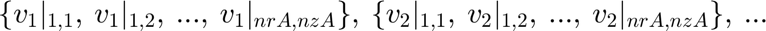

Define Pointers and Required Matrices for Equation Assembly
This script sets up index arrays (pointers) and matrices needed to assemble the discretized equations for a multi-region problem.
Contents
- Equation Index Array (ndA)
- Pointers for Full Variable Vector (JMfull)
- Global Differentiation Matrices for All Variables (dd*0v)
- Pointers for Local Variable Blocks (JM1) - Potentially Deprecated/Redundant
- Projection Matrices: Map Between Local Region Grid and Full Grid (PNM, PMN)
- Projection Matrices Extended for All Variable Instances (PMNv, PNMv)
Equation Index Array (ndA)
'ndA' is a 2D array (nrA x nzA) where each element indicates the type of equation (e.g., bulk fluid, boundary condition type) to be applied at the corresponding grid node (i, j).
ndA = zeros(nrA, nzA); % Initialize equation index array % % % Block boundary indices % IR1 = Ib(1); IR2 = Ib(2); JZ1 = Jb(1); JZ2 = Jb(2); % Locate cylinder stagnation points [~, j01] = min(abs(z0A - 0.25)); % Left stagnation point [~, j02] = min(abs(z0A - 0.5)); % Right stagnation point % --- Assign Equation Types to Regions and Boundaries --- % Assign bulk equation indices (1 to NRegion) for interior nodes of each region for k = 1:NRegion % Assign index 'k' to nodes strictly inside region 'k' ndA(Ia(k)+1 : Ib(k)-1, Ja(k)+1 : Jb(k)-1) = k; % Bulk region 'k' end % Assign boundary condition equation indices (example types) ndA(:, 1) = 3; % Equation type 3 for all nodes at the left entrance (j=1) ndA(:, nzA) = 4; % Equation type 4 for all nodes at the right exit (j=nzA) ndA(nr(1), 2:j01-1) = 5; % Equation type 5 for the middle plane below the cylinder ndA(nr(1), j02+1:nzA-1) = 5; % Equation type 5 for the middle plane above the cylinder ndA(1, 2:nzA-1) = 6; % Equation type 6 for the bottom wall (i=1, excluding corners) ndA(nrA, 2:nzA-1)= 7; % Equation type 7 for the top wall (i=nrA, excluding corners) ndA(nr(1), j01:j02)= 8; % Equation type 8 for the cylinder wall itself
Pointers for Full Variable Vector (JMfull)
This section defines pointers to locate the block of unknowns corresponding to each physical variable (e.g., velocity components, pressure) within the global vector of all unknowns. The global vector stacks all unknowns for variable 1, then all for variable 2, etc. The ordering within each variable's block matches the grid node ordering (e.g., column-major).
Example structure: 
'JMfull{i}' stores the start and end indices for the i-th variable in the full vector. Assumes 'NVA' is the total number of distinct variables across all regions.
JMfull = cell(NVA, 1); % Initialize cell array to store index ranges nbi = 0; % Base index offset (starts at 0) nunkn = ntA; % Number of unknowns per variable (equals total grid points) for i = 1:NVA JMfull{i} = nbi + (1 : nunkn); nbi = nbi + nunkn; end
Global Differentiation Matrices for All Variables (dd*0v)
Create global differentiation matrices that operate on the full vector of unknowns. These are block-diagonal matrices where each diagonal block corresponds to the differentiation matrix for a specific variable within a specific region, applied to that variable's portion of the global vector. Assumes NVAR(k) is the number of variables in region k. Assumes NVA is the total number of variable instances (sum of NVAR(k) over k, potentially adjusted).
ntv = zeros(1, NVA); nrv = zeros(1, NVA); nzv = zeros(1, NVA); % Grid sizes ddr0v = cell(1, NVA); ddz0v = cell(1, NVA); % Derivative matrices ddrr0v = cell(1, NVA); ddzz0v = cell(1, NVA); ddzr0v = cell(1, NVA); %ddzzz0v = cell(1, NVA); ddrrr0v = cell(1, NVA); ddzzr0v = cell(1, NVA); ddrrz0v = cell(1, NVA); idx = 1; for k = 1:NRegion for v = 1:NVAR(k) ntv(idx) = nt(k); nrv(idx) = nr(k); nzv(idx) = nz(k); % Assign sizes %first order ddr0v{idx} = ddr0A{k}; % Radial derivatives ddz0v{idx} = ddz0A{k}; % Axial derivatives %second order ddrr0v{idx} = ddrr0A{k}; % Radial derivatives ddzz0v{idx} = ddzz0A{k}; % Axial derivatives ddzr0v{idx} = ddz0A{k} * ddr0A{k}; % Mixed derivative %Third order % ddzzz0v{idx} = ddzz0A{k} * ddz0A{k}; % Third axial derivative % ddrrr0v{idx} = ddrr0A{k} * ddr0A{k}; % Third radial derivative % ddzzr0v{idx} = ddzz0A{k} * ddr0A{k}; % Mixed second derivative % ddrrz0v{idx} = ddrr0A{k} * ddz0A{k}; % Mixed second derivative idx = idx + 1; end end
Pointers for Local Variable Blocks (JM1) - Potentially Deprecated/Redundant
This section seems to define pointers for a hypothetical vector where variables are stacked region by region, then variable by variable within each region. This might conflict with the JMfull definition if not used carefully. It calculates index ranges based on 'ntv', which was assigned ntA earlier. If the goal is to index into the global vector defined by JMfull, this section might need revision or could be removed if JMfull is sufficient.
JM1 = cell(NVA, 1); % Initialize cell array nbi = 0; % Base index offset for i = 1:NVA % Defines index range based on ntv(i), which is currently ntA for all i JM1{i} = nbi + (1 : ntv(i)); % Index range for the i-th conceptual block nbi = nbi + ntv(i); % Update offset end % Warning: The total size implied here (sum(ntv)) might exceed the actual global vector size % if NVA is not correctly defined relative to NVAR and NRegion. Check definitions.
Projection Matrices: Map Between Local Region Grid and Full Grid (PNM, PMN)
These matrices facilitate mapping data between a local grid representation for a specific region (size nr(k) x nz(k)) and its corresponding locations within the full global grid (size nrA x nzA).
PNM{k}: Projects (interpolates/injects) data from region k's local grid to the full grid. (Local -> Global) PMN{k}: Gathers (restricts) data from the full grid into region k's local grid. (Global -> Local) PMN{k} is the transpose of PNM{k}.
PNM = cell(1, NRegion); % Cell array for Local -> Global projection matrices PMN = cell(1, NRegion); % Cell array for Global -> Local projection matrices (transpose) for k = 1:NRegion % Initialize sparse matrix: rows=global points, cols=local points in region k PNM{k} = sparse(ntA, nr(k)*nz(k)); % Loop through nodes within region k's boundaries in the global grid for i = Ia(k):Ib(k) % Global radial index for j = Ja(k):Jb(k) % Global axial index % Calculate linear index in the global grid vector l1 = sub2ind([nrA, nzA], i, j); % Calculate linear index in the local grid vector for region k l2 = sub2ind([nr(k), nz(k)], i - Ia(k) + 1, j - Ja(k) + 1); % Set the mapping: global index l1 corresponds to local index l2 PNM{k}(l1, l2) = 1; end end % The transpose provides the mapping from global to local PMN{k} = PNM{k}'; end
Projection Matrices Extended for All Variable Instances (PMNv, PNMv)
Extend the projection matrices to handle the full vector containing all variables. This essentially replicates the spatial projection for each variable instance. Assumes the projection is the same for all variables within a given region.
PMNv = cell(1, NVA); % Global -> Local projection for each variable instance PNMv = cell(1, NVA); % Local -> Global projection for each variable instance idx = 1; % Linear index for the variable instance for k = 1:NRegion % Loop over regions for v = 1:NVAR(k) % Loop over variables within region k % Assign the spatial projection matrices to this variable instance PMNv{idx} = PMN{k}; PNMv{idx} = PNM{k}; idx = idx + 1; % Move to the next variable instance end end